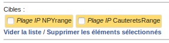
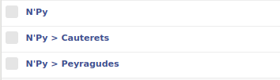
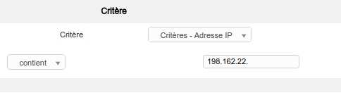
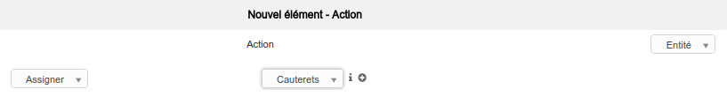
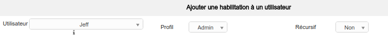

Gestion du multi-sites
La gestion multi-sites permet de répertorier sur une seule application GLPI toutes les machines de sites distants. L'application n'a pas besoin d'être installée sur plusieurs serveurs.
Ajout des plages IP
En vue de faire l'inventaire de sites distants, il est essentiel de connaître les plages IP des différents sites et de créer les plages IP associées. Puis, dans les tâches créées précédement, il est nécessaire d'ajouter ces nouvelles cibles dans les jobs.

Sécurisation d'Apache
De plus, le pare-feu du site doit être ouvert aux agents sur le port 62354 et sur le port web 80 ou 443. Pour sécuriser la transmission des informations, il est conseillé de paramétrer Apache pour passer par le port HTTPS 443, comme expliqué ci-après. Le port des agents est modifiable sous l'onglet Administration > FusionInventory et Général > Configuration générale.
La prise en compte de sites distants nécessite la sécurisation des données transitants entre GLPI et les agents déployés. Une modification de la configuration Apache doit être effectuée afin d'autoriser l'accès à GLPI en HTTPS. Pour cela, il convient de créer un certificat SSL. Les autorités ayant la possibilité de délivrer ces certificats ne les fournissent pas gratuitement, à l'exception de certains tel que Let's Encrypt. Il est tout de même possible de paramétrer un certificat auto-signé avec openssl.
Afin de faciliter le processus de certification, le script Certbot peut être utile. Il faut tout d'abord installer les paquets nécessaires puis lancer le script, qui affichera les domaines pour lesquels générer un certificat SSL.
sudo apt-get update
sudo apt-get install software-properties-common
sudo add-apt-repository ppa:certbot/certbot
sudo apt-get update
sudo apt-get install python-certbot-apache
Il faut également activer le module ssl sur Apache :
sudo a2enmod ssl.
Enfin, pour lancer la configuration, exécuter :
sudo certbot --apache.
Le détail est visible sur cette vidéo.
Le détail de la génération d'un certificat par Let's Encrypt, sans l'utilisation de Certbot, est disponible ici.
Il est cependant à noter que le certificat ne durant que 90 jours, il faudra le mettre à jour. Pour cela, une tâche cron peut être paramétrée.
Editer la crontab : sudo crontab -e.
Et y ajouter la ligne suivante qui va permettre de vérifier si le certificat expire dans moins de 30 jours, tous les lundis à 23h50 et de le renouveler dans ce cas :
50 23 * * 1 /usr/bin/certbot renew >> /var/log/certbot-renew.log.
En plus de sécuriser le serveur en HTTPS, les agents doivent être liés à ce certificat. Il faudra notamment spécifier le chemin vers le certificat. La démarche est explicitée ici. Le fichier de configuration de l'agent, situé dans /etc/fusioninventory/agent.cfg, doit être modifié. Pour cela, changer l'adresse contenue dans "server" par "https://ipPubliqueDeLaMachineServeur/glpi/plugins/fusioninventory/" ainsi que le chemin vers le certificat dans la variable "ca-cert-file".
Note
Pour un certificat auto-signé, il sera nécessaire de passer la valeur "no-ssl-check" à 1.
Configuration des entités
Afin d'organiser les machines dans les différents sites il est possible de créer des entités auxquelles les rattacher. Celles-ci peuvent être ajoutées sous l'onglet Administration > Entités.

Une règle doit être créée dans Administration > FusionInventory et Règles > Règles sur l'entité "ordinateur". Le critère principal sera relié à la plage IP du site et l'action permettra de placer l'équipement dans la bonne entité.


Cela va pouvoir permettre la gestion des entités par des administrateurs distincts. Un super-admin pourra ainsi administrer tout le parc et un admin peut être assigné à une sous-entité, donc son site.
Pour assigner un administrateur à une entité, se rendre sur l'entité à modifier puis dans l'onglet Utilisateurs et ajouter un utilisateur déjà créé. Dans le cas d'un nouvel utilisateur, le créer au préalable dans Administration > Utilisateurs.
